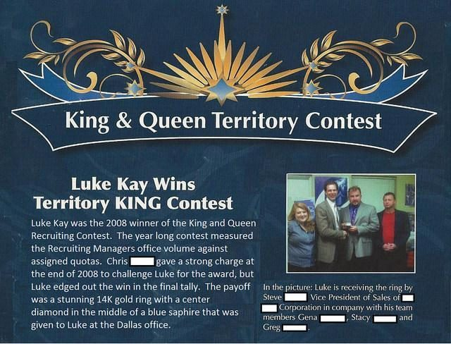
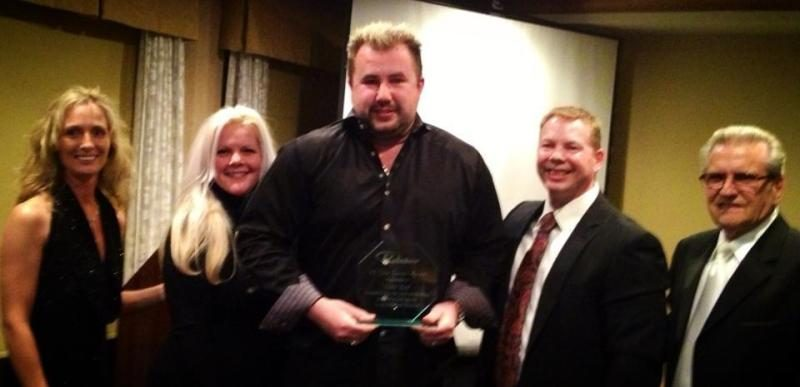
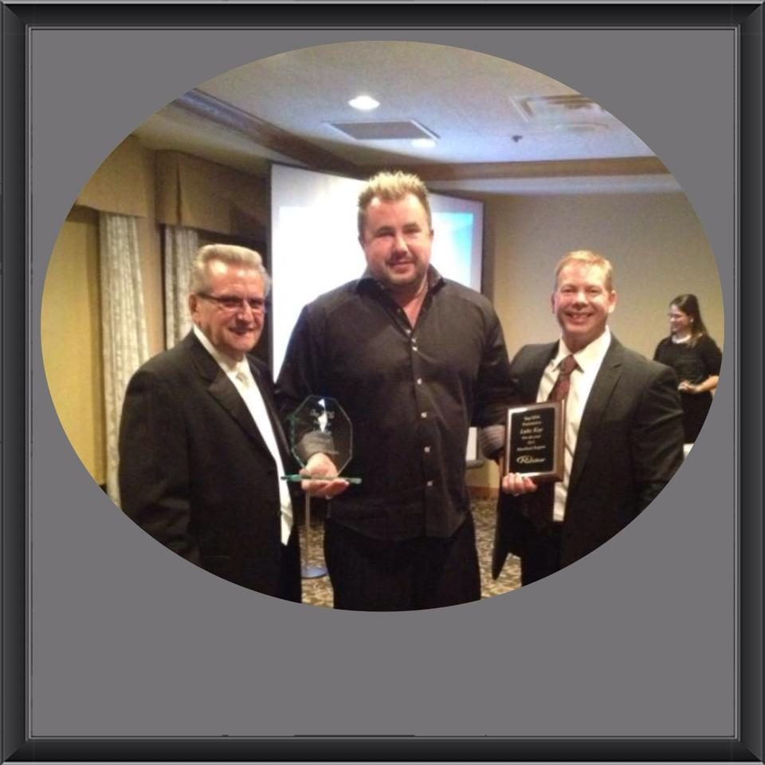
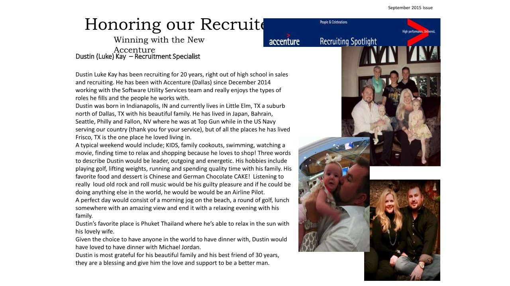
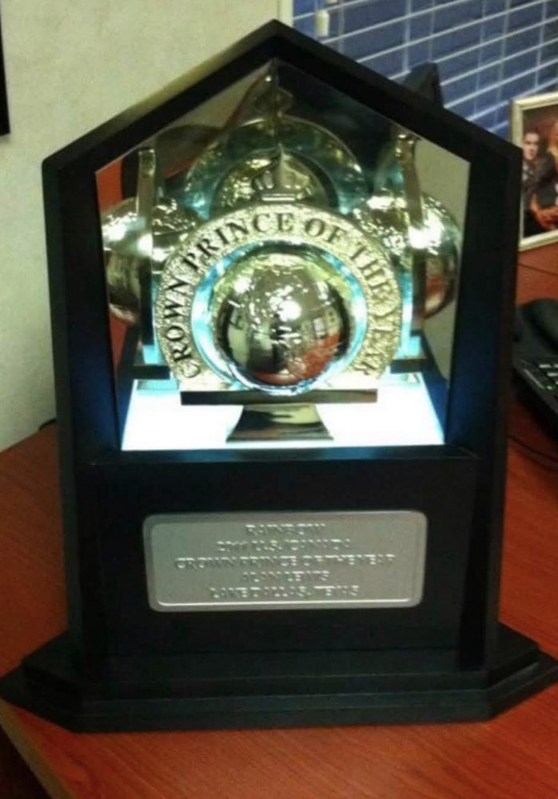
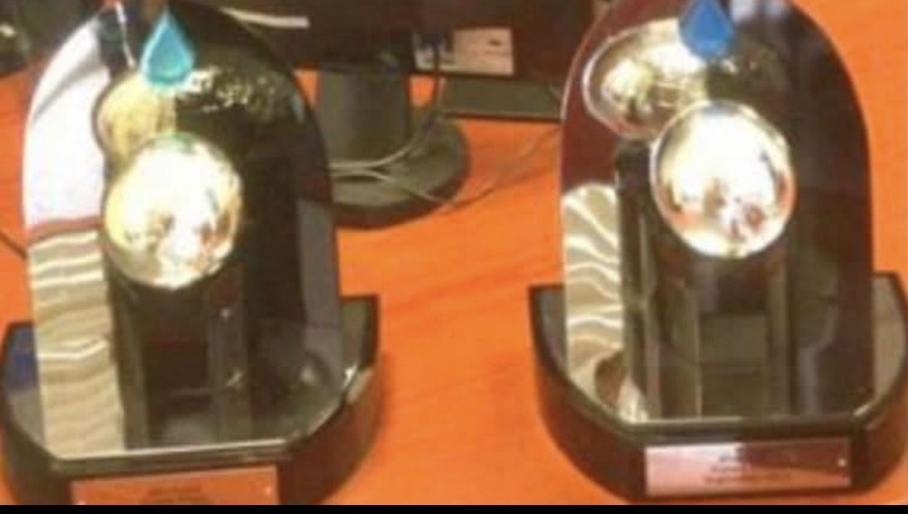

Scaling loan officer hiring from 300 to 900 at PennyMac
As VP of Talent Acquisition at PennyMac, I led seven recruiters. Loan officer hiring grew from 300 to 900, and time to fill fell from 36–42 days to 28 days.
- 300 to 900Loan officer hires
- 28 daysTime to fill
- 7Recruiters
What we looked for
We looked for loan officers with three to five years in mortgage banking and typically at least a year in each role. We reviewed annual loan volume and transaction counts to understand each candidate’s production history and how it aligned with the business.
When hiring grows quickly, I look at hiring volume and time to fill together. The first shows how much the team delivered. The second helps show whether open roles are moving through the process.
Leading 47 recruiters at Metro Systems
As Regional Recruiting Manager at Metro Systems, I led 47 recruiters. I earned National Recruiting Manager Champion recognition in 2008 and was named Top Recruiter of the Year in 2012.
What I look for in a team review
When a recruiting team falls behind, I want to know where the work stalls. A shortage of qualified candidates calls for a different conversation than a backlog of candidates waiting for hiring-manager feedback. Looking at individual stages gives a manager something specific to coach and gives the recruiter a next step they can act on.
Recruiting awards and recognition
The archive includes the 2008 Territory King announcement, recruiting award ceremony photos, and my September 2015 Accenture Recruiting Spotlight.











